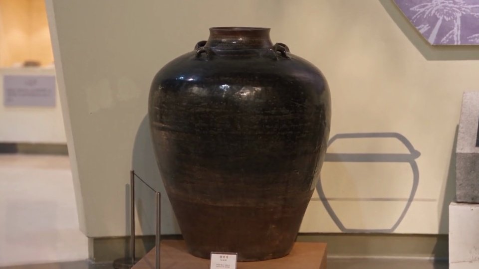
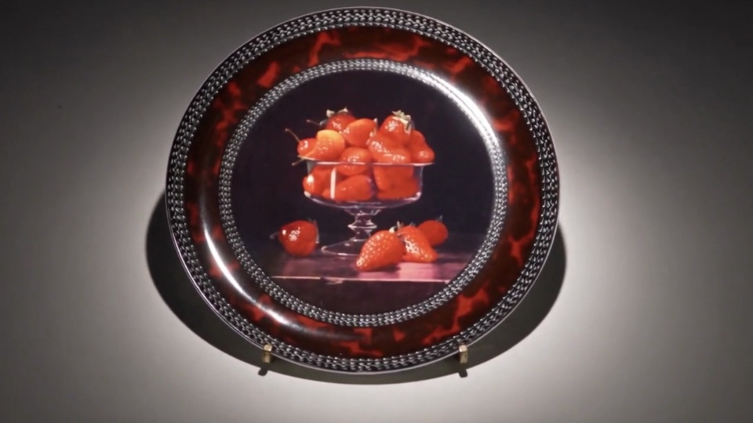
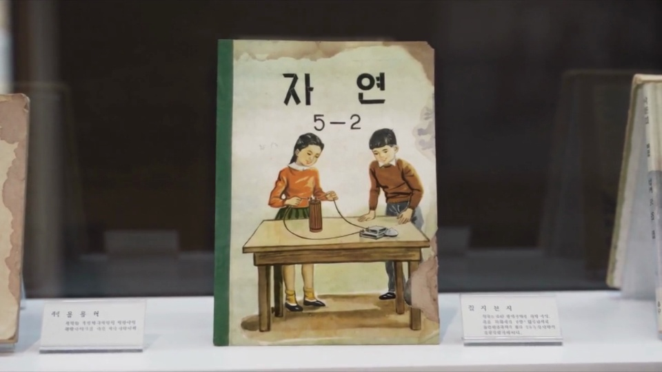
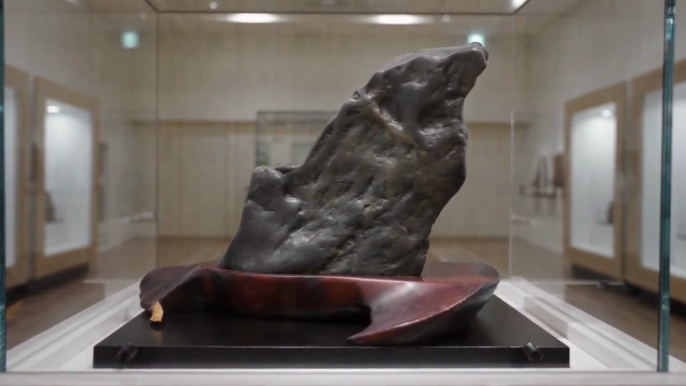
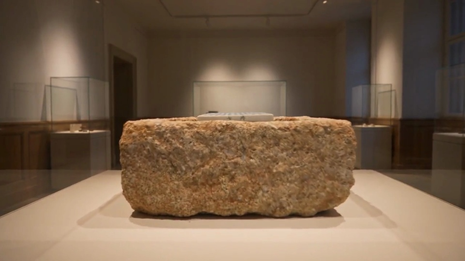

COLLECTION / 01
전통 옹기
회령단지
회령단지
- 시기
- 일제강점기
- 재질
- 도기
한반도 북부 회령 지방의 특징적인 유약을 입힌 물항아리입니다. 기형과 유색에서 지역의 제작 전통과 생활 속 쓰임을 살펴볼 수 있습니다.
AI 영상 보기명칭, 연대, 재질은 박물관의 2024년 봄 소식지를 따릅니다.
이미지는 본 프로젝트의 AI 영상에서 추출했으며 AI 재현을 포함할 수 있습니다. 유물 정보는 박물관 원본 기록을 기준으로 확인하세요.

COLLECTION / 01
회령단지
한반도 북부 회령 지방의 특징적인 유약을 입힌 물항아리입니다. 기형과 유색에서 지역의 제작 전통과 생활 속 쓰임을 살펴볼 수 있습니다.
AI 영상 보기
COLLECTION / 02
베르나르도 장식 접시
접시 안쪽에는 전사 기법으로 옮긴 정물화가 있습니다. 함께 소개된 화병과 도상과 장식을 비교해 보세요.
AI 영상 보기
COLLECTION / 03
자연 5-2
제2차 교육과정기에 문교부가 발행했습니다. 소식지에 따르면 전후 유네스코와 UNKRA가 기증한 인쇄 장비로 제작했습니다.
AI 영상 보기
COLLECTION / 04
물개 물형석
단양 계곡산에서 채집해 한경수가 기증했습니다. 물개를 닮은 자연석의 윤곽에서 수석 감상의 특징을 볼 수 있습니다.
AI 영상 보기
COLLECTION / 05
한준 석함 · 청화백자묘지명
한준(1542~1601)과 관련된 유물로, 2013년 묘 이장 과정에서 출토되어 2024년 3월 기증되었습니다.
AI 영상 보기